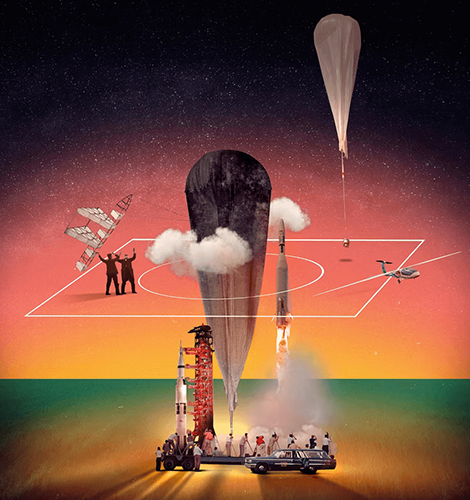
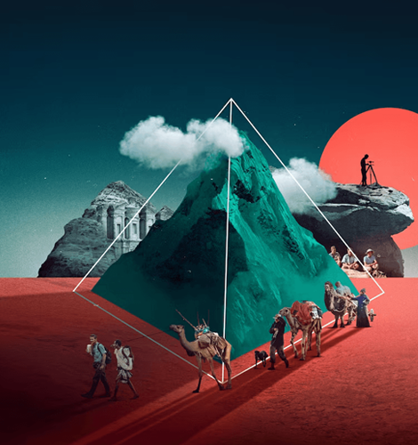
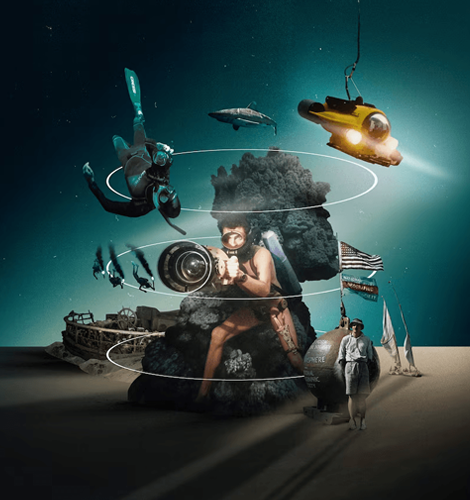
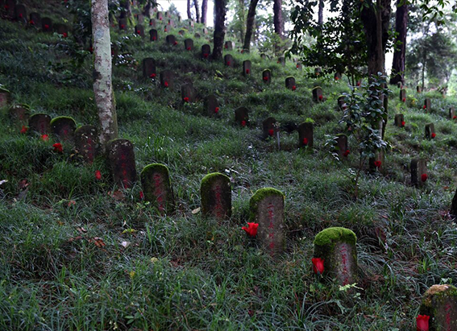
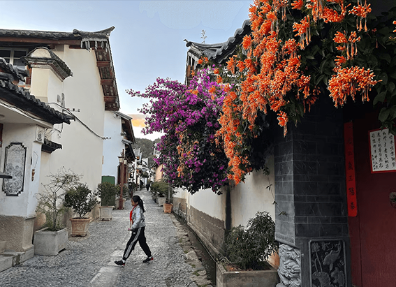
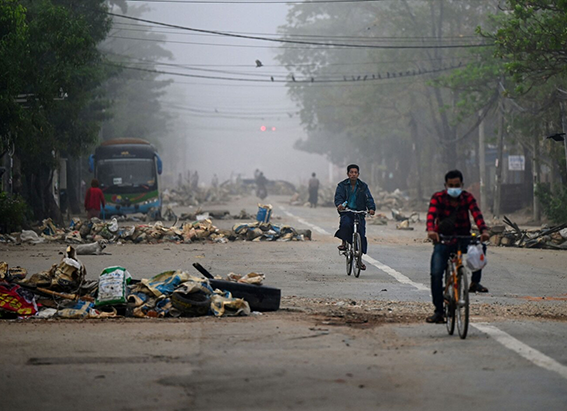

NATIONAL GEOGRAPHIC
Beyond the Western myth of exploration lies a rich and often overlooked history
TRAVEL
- 
- 
- 
There is only one museum along the old Oregon Trail that tells the story of America’s westward expansion through the eyes of those being expanded into. In a corner of Oregon bordered by Washington and Idaho, this wood-paneled warren of galleries and interactive exhibits celebrates the heritage of Native people and mourns what was destroyed when the pioneers arrived. Walking down a long ramp, visitors enter the brick facade of a replica “Indian training school,” where Native children were forcibly converted and assimilated. A life-size photo of the students stares back from over a century ago; their matching uniforms make them look like tiny soldiers.
“We were told to write our own history if we want it told well,” Bobbie Conner explained. She sat in a conference room of the Tamástslikt Cultural Institute, the center she directs on the Umatilla Reservation, home to the Cayuse, Umatilla, and Walla Walla tribes. “And this story is as old as time: conquest.”
The history of exploration is often told in the binary. Explorer and high mountain. Explorer and remote island. Explorer and uncontacted tribe. The conqueror and the conquered. Today the definition of exploration is more expansive. We explore our bodies, our ancestry, the capacity of our brains, the idea of home. We explore history and who gets to tell it. The explorer has been an adventurer, a showman, a scientist, and now there’s a new archetype: the reconciler someone to help us understand how we got here. These pioneers are interrogating our history books, rewriting them, and hoping to prevent the past from repeating.
By the time I sat with Conner in that conference room, I’d spent six months in Oregon, my home state, waiting out the COVID-19 pandemic. For years I’d written dispatches for this magazine from places like the remote marshes of South Sudan, the desert border of the United States and Mexico, and the mountains of eastern Congo. Now, stretched in front of me was the banality of a home I’d never had much interest in. With nowhere to go, I sought to understand my new confines; before long, I ended up on the edge of the state, questioning my idea of exploration itself.
But first, let’s rewind some 60,000 years to when “a small colony in Africa went into the world and lost contact.” This is according to Felipe Fernández-Armesto, a historian and professor at the University of Notre Dame, who’s spent nearly six decades studying how the world has been transformed by a process he calls route finding in which different cultures collide, interact, and adapt to each other in journeys fueled by greed, imperialism, religion, and science. “The history of exploration,” he says, “is putting the routes between different peoples back.” It’s as if, for thousands of years, we’ve been attempting to undo the distance our earliest ancestors put between us, for better or worse.
It was this goal that united scientists, scholars, and military men to found the National Geographic Society in 1888. For the past 135 years we’ve plumbed the sea, sky, land, and space “for the increase and diffusion of geographic knowledge.” The exploration we funded and documented seemed at times less about making contact and more about being first. And there was no shortage of those milestones: from summiting Mount Everest with the American team to mapping the Atlantic Ocean floor.
Firsts then morphed into discoveries: Science, space, and the natural world were wrung for their secrets. The Leakeys unearthed our fossilized ancestors, Jane Goodall lived among the chimpanzees, and conservationist Mike Fay charted a 2,000-mile trek across Central African rainforests. Today explorers may not be human at all: Does a camera explore when it’s dropped to the bottom of the ocean to photograph at depths humans haven’t yet reached? Or a microscopic robot, when it’s threaded through our bodies to perform surgery?
Stories have fueled exploration for hundreds of years. During what’s known as the European age of exploration, from the 15th to 17th centuries, popular fiction told of heroes on daring journeys, and these so-called romances of chivalry may have inspired Columbus and Magellan to set sail. Storytelling has repopulated the world with new generations of explorers many times over. Perhaps the photography and maps National Geographic magazine published moved you to go out and see the world. But stories have also served to propel a Western myth of the explorer that isn’t entirely true.
“There’s a failure of the literature to discuss explorers from other countries, so for the last 500 years this was a story dominated by dead white males,” says Fernández Armesto. “That’s created the impression that it’s a white male activity it isn’t, by any means.
Comments :
- john Very good
- john Very good
Leave a Reply
Your email address will not be published. Required fields are marked*
Related posts:
-
The stories I learned walking the Burma Roa perhaps WWII’s greatest engineering feat
It unspools north from Myanmar, or Burma, to the jungled hills rumpling the border of China. Near Tengchong, an ancient Chinese trading post leveled by U.S. bombers in World War II, it bypasses a McDonald’s closed by COVID-19
View article -
This ‘culture of introverts’ prefers to have conversations in song
Fiftyish. Squarely built. Face reddened by the subtropical sun. King Li is a community leader among the Bai ethnic minority in the rumpled, green mountains of Yunnan Province. A friendly man. But reserved. Soft-spoken.
View article -
A storyteller on a global trek maps his walk through a city agonized by a military coup
Perhaps at the makeshift shrines of its dead. Take, for example, the ephemeral memorial of Khant Nyar Hein.
View article